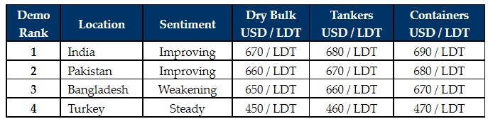

inWeekly Demolition Reports04/04/2022

Both Pakistani and (especially) Indian markets have come surging back this week, to lead the way over a lackluster Bangladesh that has virtually dropped out of contention of late.
Firming steel plate prices in India have been the key driving factor behind this, and it still seems inevitable that the USD 700/LDT mark could be breached into these two markets, on upcoming sales in the near future (as long as these fundamentals hold).
Pakistan has been on the sidelines of late, but appear to have woken up this week, in the face of some serious and sustained competition from a resurgent India and a Bangladeshi market that’s begun to slip in the rankings.
Most of the losses on Indian steel plate prices have been made up over the last 3 – 4 weeks and the Alang market finishes this week in a rare position i.e. leading the market rankings ahead of all their sub-continent competitors, especially the usually pole-positioned Bangladesh.
Bangladeshi steel plate prices have been falling in recent weeks, and despite firming nearly USD 24/Ton by mid-week, the industry has seen them plummet from the summit to the bottom of the (sub-continent) rankings as their plate prices declined almost the same amount by the time the week ended.
Furthermore, such a pricing reversal certainly sees them positioned uncompetitively on any market candidates for the time being – even on geographically positioned units in the Far East, which are now heading towards Indian and Pakistani shores.
Finally, in the West, the Turkish market remains unchanged, firmly priced and positioned, with minimal tonnage to compete on.
Overall, there has been some hesitancy to dip in at some of these historical highs approaching USD 700/LDT, across all sub-continent markets. However, due to continually impressive and improving steel prices that seem to have been performing well on the back of the ongoing Ukraine crisis, it’s a wonder how long these numbers will stay around.
For week 13 of 2022, GMS demo rankings / pricing for the week are as below.

📄 Download PDF: 2022-04-04kdE_org.pdfSource: GMS,Inc. ,https://www.gmsinc.net/gms_new/index.php/web